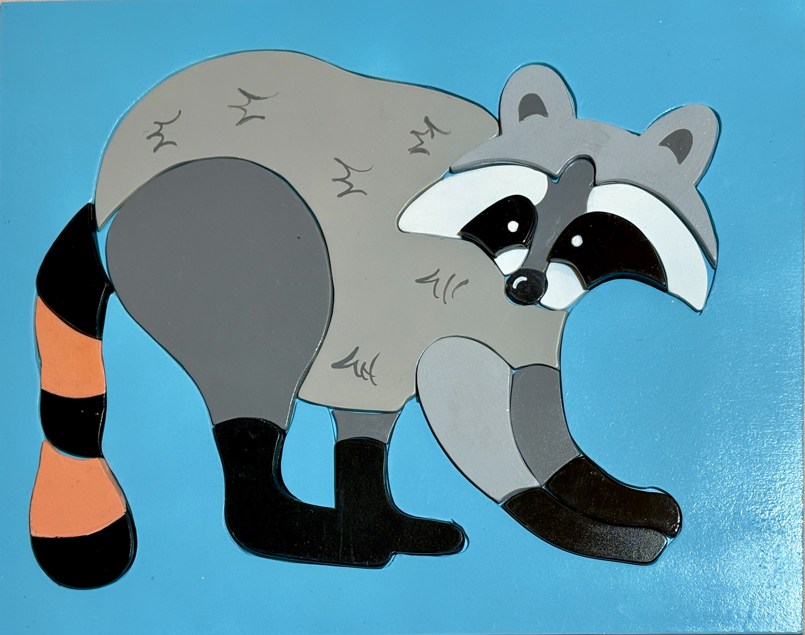
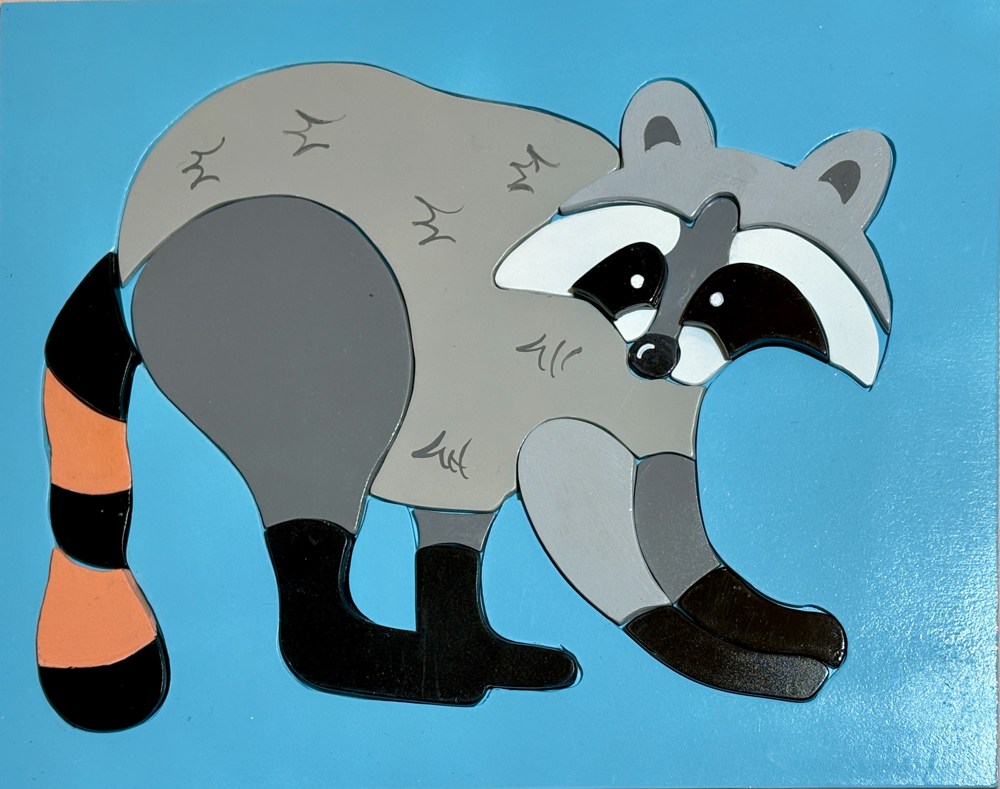

MAPU
Mapu K'uLu signfica mapache del maya yucateco. De donde parte como inspiración a este rompecabezas de especies de peligro de extinción desarollado en 2do trimestre de la Universidad.

Mapu K'uLu signfica mapache del maya yucateco. De donde parte como inspiración a este rompecabezas de especies de peligro de extinción desarollado en 2do trimestre de la Universidad.
